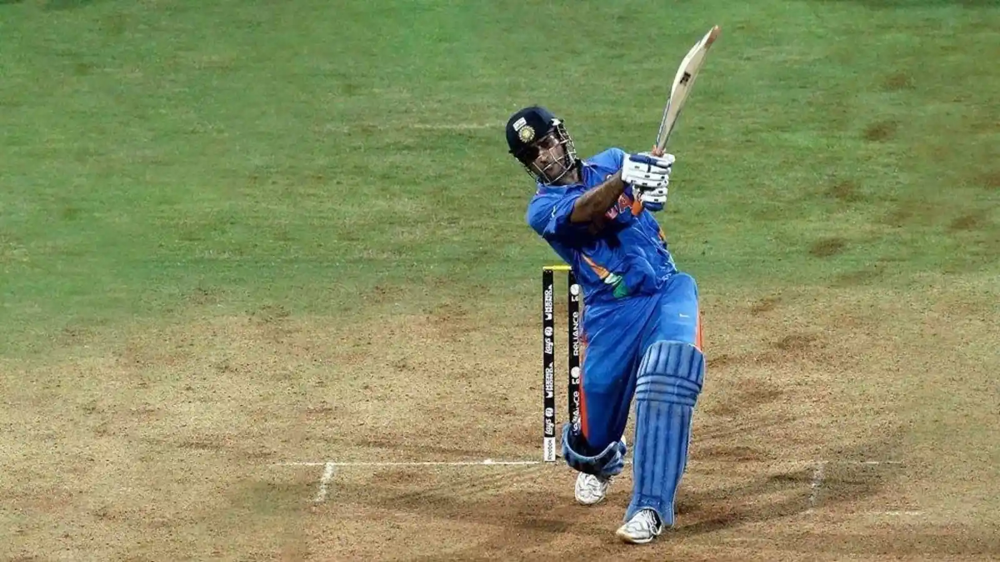
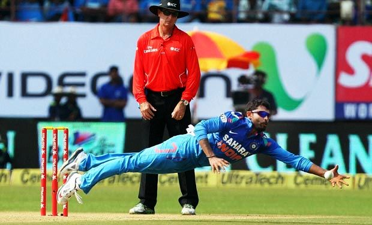

-

In the 2011 Cricket World Cup, MS Dhoni led India to victory
after 28 years. His bold decision to bat higher in the final
against Sri Lanka and his match-winning six sealed the win,
cementing his legacy as one of India’s greatest captains. -

Sachin Tendulkar, born April 24, 1973, is one of cricket’s
greatest batsmen. He is the highest run-scorer in Tests and
ODIs, the only player with 100 international centuries, and
fondly called the “God of Cricket” and “Master Blaster.” -

Ravindra Jadeja is an Indian cricketer and one of the world’s
top all-rounders. A left-handed batsman, left-arm spinner,
and brilliant fielder, he is the first Indian with three triple
centuries in first-class cricket and has been ranked No.1
Test all-rounder. He plays for India and Chennai Super Kings
in the IPL.
Cricket Blogs